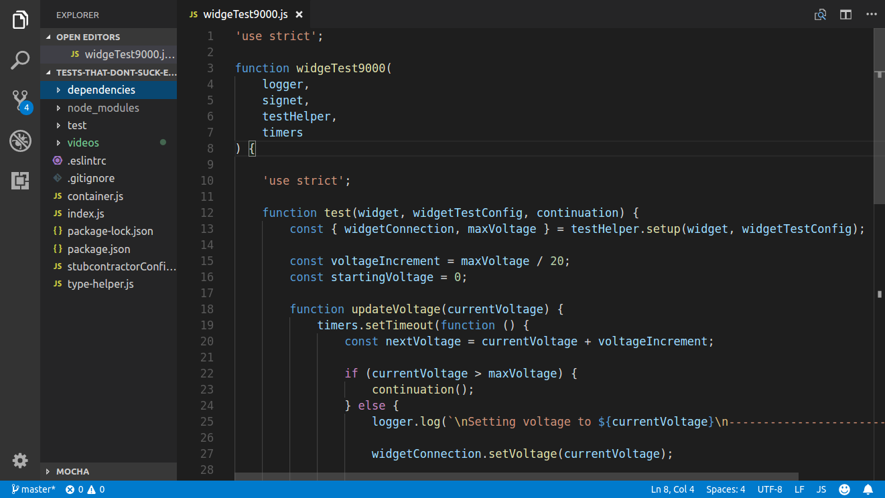
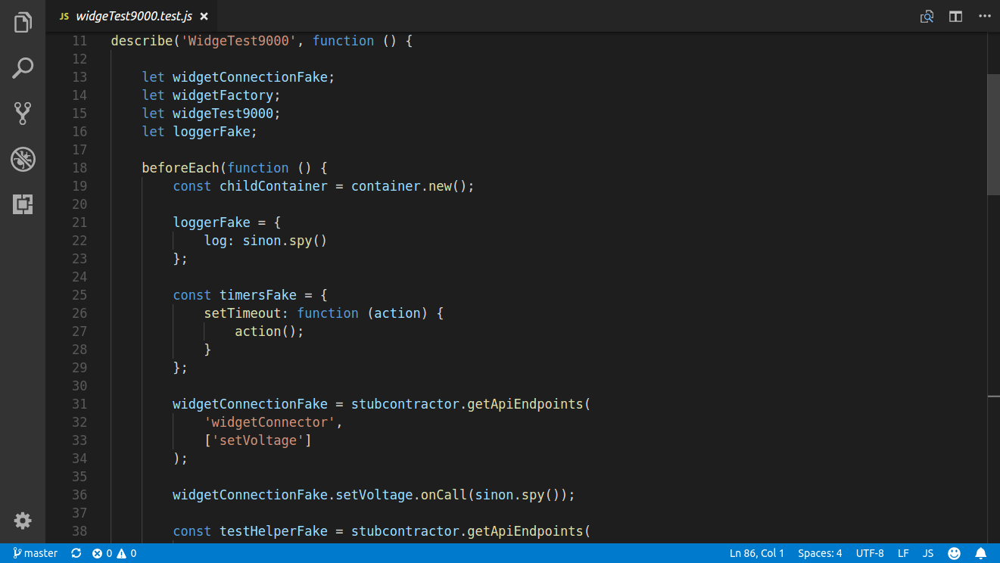

Communicating with Code
Tests That Don't Suck
I'm Chris
@cm_stead
www.chrisstead.com
A Little About Me
- I dig #CodingJoy
- I believe #CodeIsForHumans
- I make tools:
- JS Refactor
- Dject
- Mochadoc
- Signet
- Stubcontractor
- And more...
QUEEN
Four great musicians brought together in harmony
Testing
Many great tools brought together in harmony
Legacy Code ...
... is any code without tests.
— Michael Feathers
WidgeTest9000 is Legacy Code:
Let's write a test!
The Setup:
As you build your test
Follow the errors, then fake it 'til you make it!
(Or stub it, or spy it, or mock it...)
The Meat of the Test
The Three-A Approach:
- Arrange
- Act
- Assert
The Arrangement and Action:
Play Video
The Assertion:
Play Video
Why Do We Say We Test?
- To verify correct behavior
- To capture information about bugs
- To meet code coverage
- We were told to
Tests Get No Respect

Are There Better Reasons To Test?
- Communication
- Communication
- Communication
We Exercised The Code, But...
- Description text should declare intent
- Named variables expose meaning better
- Complicated objects can be extracted away
- Domain knowledge can be built in

Tests That Communicate
- Inform other developers of original intent
- Exemplify API use
- Deepen understanding of the business domain
- Expose criteria for correct behavior
Writing Great Code Is Like Writing A Great Story
It Never Happens In A Single Pass
Where Do We Start?
Sometimes choosing the right place to start is the hardest thing you'll do all day
Here's What I'll Do
- Update description
- Extract variables
- Build factory for setup data
Why Go That Way?
- A good description provides a goal
- Extracting variables is fast and easy
- Data factories improve signal to noise
- But first...
Model Your Domain
Use types as a domain specific language for your expectations
Off-The-Shelf to Bespoke Domain Types
Play Video
A Well-Described Test
Choice Words Make All The Difference
Choosing a test name
- What does it do?
- Why does it do that?
- How does it align with the domain?
Everything is in a Name
Play Video
Extract Variable
Part of This Healthy Refactoring
Let's Extract!
Play Video
Automate Your Refactorings
Hot Take: If your editor doesn't support automated refactorings, ditch it.
Don't @ me.
Factories For Fun and Profit
Declarative Test Data with DataMother
Moving Our Spec to DataMother
Play Video
Happy Extractions, Everywhere!

Isolating Code Under Test
The more logic you touch, the more complicated your tests become
Generating Test Doubles At the Seam
Play Video
Touch Integration
Humans make mistakes; automatically generate all of the test doubles you can
Fix That Broken Test!
Play Video
Capture Side Effects in a New Test
Play Video
Dodging Double Duty
When the tests are clear and clean, you can leave the documentation work to the machine!
Generate API Docs
Play Video

The Takeaway
- Tests should do more than exercise code
- All good tests should facilitate communication
- Tests + documentation is doubling your effort
- The right tools can ease testing turmoil
The Source Code:
The Tools
- VS Code
- JS Refactor
The Libraries
- Approvals
- Dject
- Chai
- Datamother
- Eslint
- Mocha
- Mochadoc
- Signet
- Sinon
- Stubcontractor
The Slides
http://www.chrisstead.com/presentations/tests-that-dont-suck